PiMate 画面モック
画面を選ぶと、実寸（390×844）の HTML を開きます。仕様の正本は docs/SPEC.md、このモックの使い方は README.md を参照してください。
メイン画面
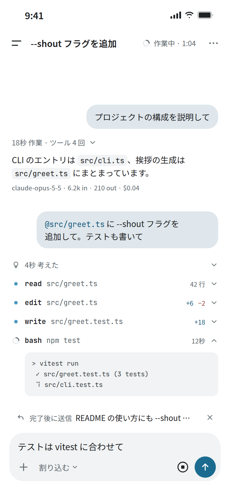
チャット — 作業中 Main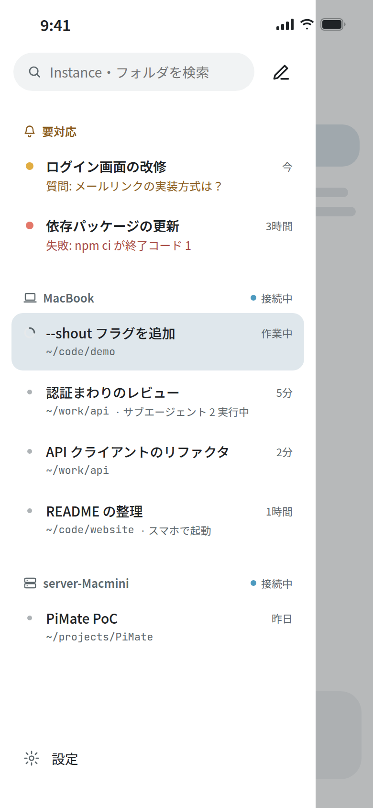
ドロワー — Instance 一覧 Drawer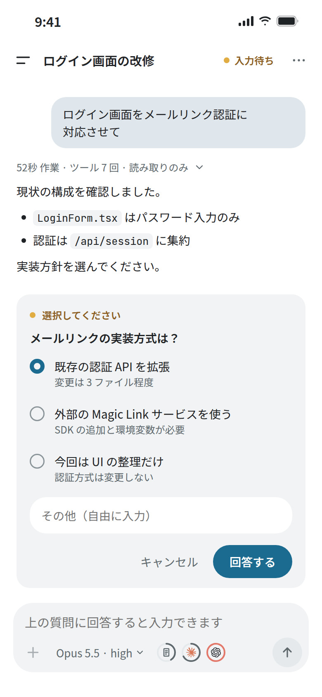
チャット — 入力待ち Chat-Waiting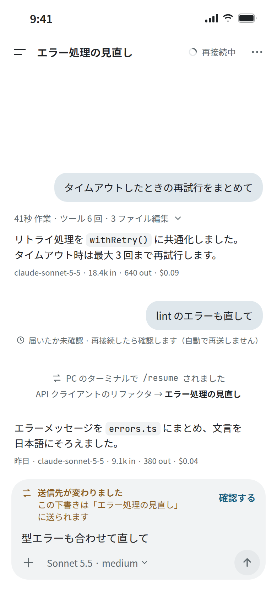
チャット — 再接続と PC 側の操作 Chat-Edge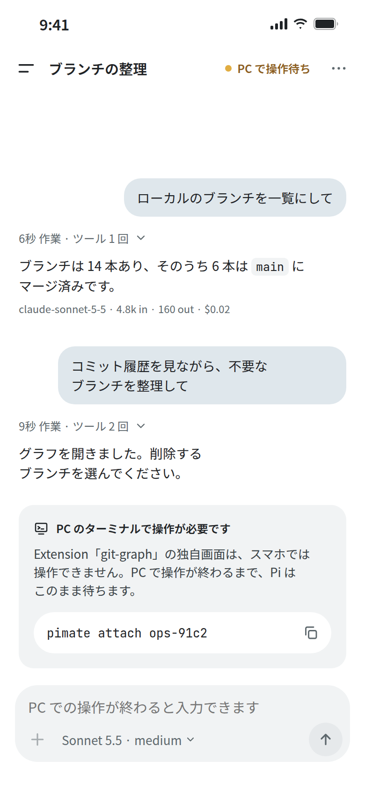
チャット — PC で操作が必要 Chat-Attachシートとフロー
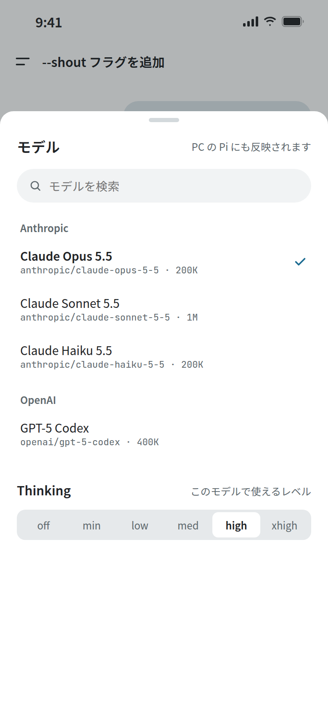
モデル・Thinking シート Sheet-Model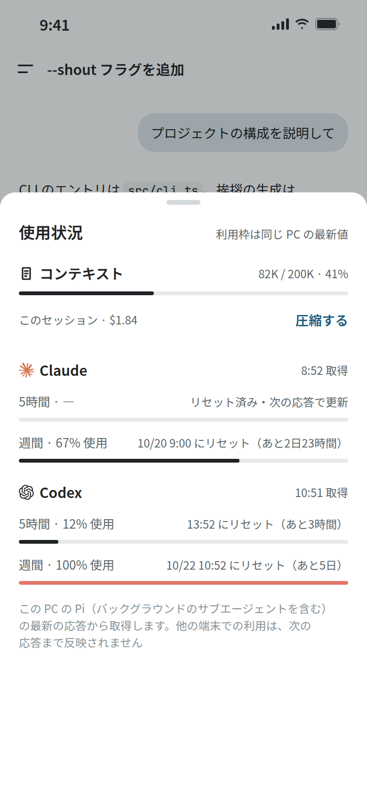
使用状況シート Sheet-Usage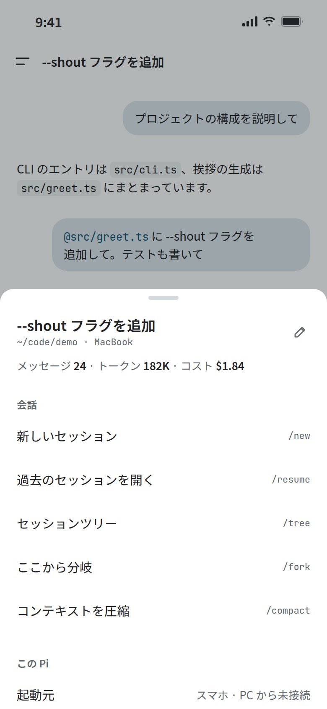
セッション・Instance シート Sheet-Session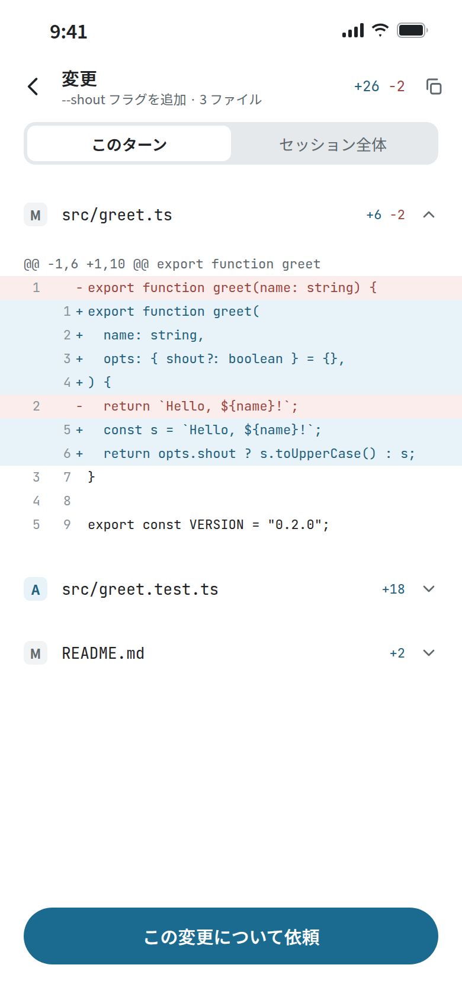
変更レビュー Review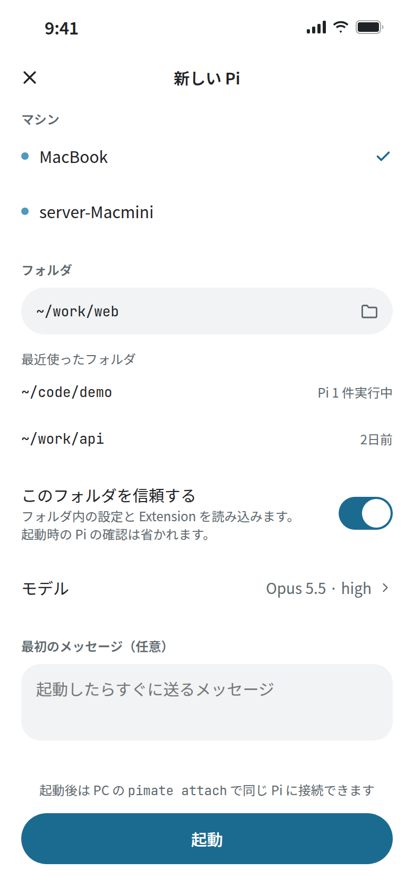
新しい Pi を起動 New-Piサブエージェント
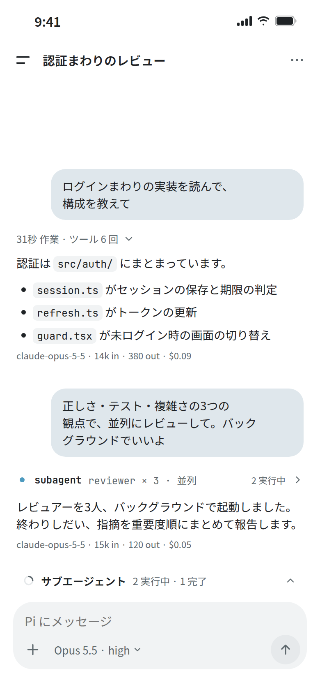
チャット — サブエージェント実行中 Chat-Subagents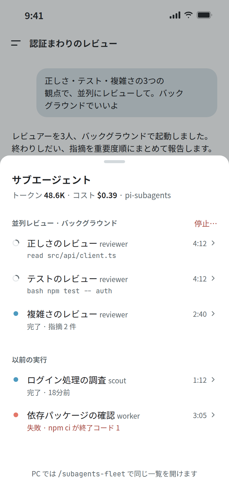
サブエージェント一覧 Sheet-Subagents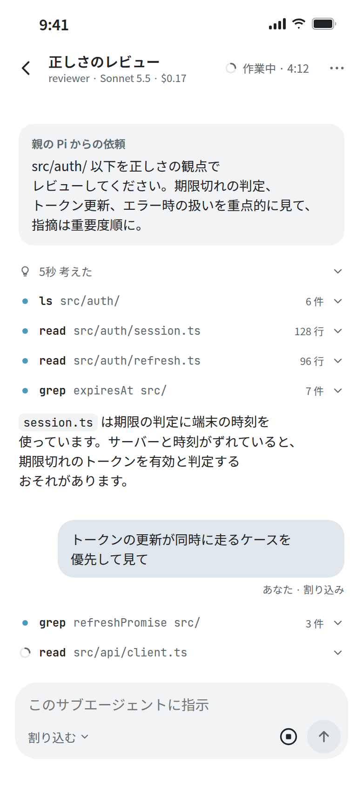
サブエージェント — pi-subagents（指示を送れる） Subagent-Detail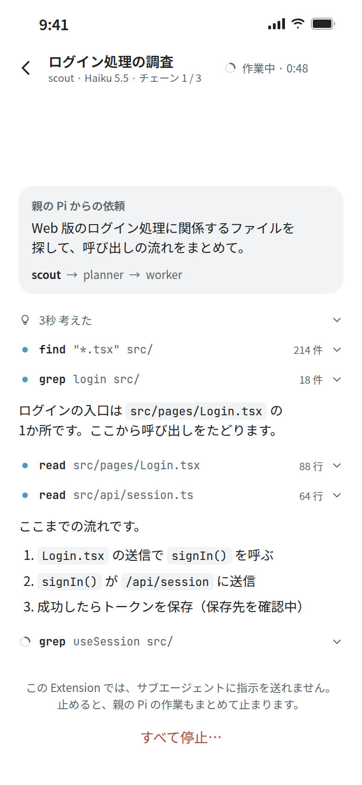
サブエージェント — 公式サンプル（見るだけ） Subagent-Detail-Readonly